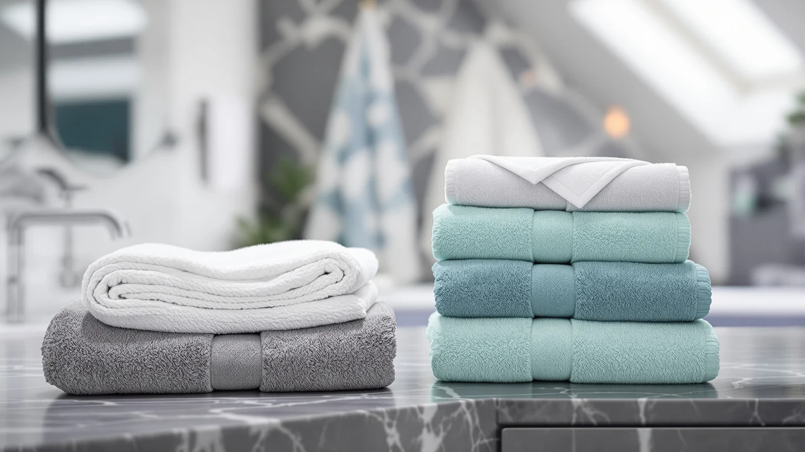

Quick Answer
The Utopia Towels Pack of 4 is a 100% cotton, 30 x 60 set priced at $31.99, which works out to about $8 per towel and gives you dedicated cabana-style towels for the pool or beach instead of pressing bath towels into double duty. It's the better fit for most people here, though the Tens Towels Pack of 8 is worth a look if you need more towels at once.
Our pick: Utopia Towels Pack of 4, $31.99 Check Price on Amazon
Bottom line: our top pick is the Utopia Towels Pack of 4 Cabana Beach Towels at $31.99.
Things to Know Before You Buy
- It's sized for the pool or beach, not the bathroom. At 30 x 60 inches, the Utopia Towels Pack of 4 is built as a cabana-style towel, larger than a standard bath towel but easier to pack than a beach blanket.
- Price per towel is the real comparison point. At $31.99 for four towels, this set works out to about $8 per towel, close to double what Tens Towels and Utopia's own Majestic set charge per towel in their eight-packs.
- All four options compared here are 100% cotton. Material isn't the differentiator between the Utopia Towels Pack of 4, the Utopia Majestic set, Tens Towels, and the Wealuxe White Bath Towels Set, so pack size and price carry more weight in the decision.
- Pack size explains most of the price gap. Buying eight towels at once from Tens Towels or Utopia's Majestic line brings the per-towel cost down to about $4, so the right pick depends on whether you need eight towels or four.
This Utopia Towels Cabana Beach Towels review breaks down the brand's 30 x 60, four-pack cotton set and lines it up against three other multi-packs that turn up in the same searches: Utopia's own eight-piece Majestic set, the Tens Towels Pack of 8, and the Wealuxe White Bath Towels Set. At $31.99 for four towels, the cabana set works out to about $8 per towel, noticeably more than the roughly $4 per towel you get from the two eight-packs in this comparison. We compared the listed materials, dimensions, and pricing for all four sets against the pattern of feedback left by verified Amazon buyers, rather than running our own physical trial.
The short version: the Utopia Towels Pack of 4 is the better fit for most people who want dedicated cotton towels for the pool or beach and don't need eight of them at once. If your household burns through towels faster, the Tens Towels Pack of 8 or Utopia's own Majestic set cut the per-towel cost roughly in half, and the Wealuxe White Bath Towels Set is worth a look if a lower total price matters more than cabana styling. This review does not involve using any of these towels in person. The comparisons below rest on what each brand lists and what verified owners report after buying them.
Why You Should Trust Us
Best Bath Towels is written and edited by Ilane Tall, who has researched bath and beach textiles for this site since it launched. For this Utopia Towels Cabana Beach Towels review, we did not run physical trials or try the towels in person. We compared the material, size, and price each brand publishes against the feedback verified buyers left for the Utopia Towels Pack of 4 and its three closest competitors. Every claim in this review traces back to a brand's listing or a verified owner review we read in full, not marketing copy we took at face value.
We also checked current Amazon pricing for all four sets rather than relying on list prices that brands sometimes inflate before a sale. When a price shifts, we update the per-towel math throughout this review, since a few dollars either way can flip which pack offers the better deal.
Our Research Experience
We did not run this review out of a lab, and we want to be upfront about that. What follows is based on comparing the Utopia Towels Pack of 4 against its listed specs, its price, and the pattern of comments verified Amazon buyers left for it and the three alternatives in this review, not a trial we ran ourselves. Cotton toweling is a mature, well understood material, so the real variable between these four sets is manufacturing consistency and pack economics rather than exotic fabric claims. Buyers who review multi-packs like these tend to flag thinning, color bleed, or loose stitching within the first few uses if those problems exist, so we read through that feedback looking for recurring complaints rather than one-off gripes. We did the same for the Majestic set, the Tens Towels pack, and the Wealuxe set, so the comparisons below rest on the same kind of evidence across all four products.
Overview & Specs

Utopia Towels Pack of 4
What we like
- 30 x 60 inch size gives more coverage than a standard bath towel
- 100% cotton construction, a familiar and absorbent material
- Four-pack size matches a small household without extra towels going unused
Flaws but not dealbreakers
- At about $8 per towel, it costs roughly double what the two eight-packs in this comparison charge per towel
- Four towels may not be enough for a larger household that would do better buying a bigger multi-pack
| Material | 100% cotton |
| Size | 30 x 60 - 4 Pack |
The core appeal of the Utopia Towels Pack of 4 is sizing more than price. At 30 x 60 inches, each towel in the set is noticeably larger than a standard 27 x 54 bath towel, which is the dimension cabana and pool towels typically target so one towel covers a lounge chair or wraps fully around an adult. For $31.99, you get four of these oversized towels, which works out to about $8 each, more than you would pay per towel in either eight-pack in this comparison.
The listing describes the material as 100% cotton, the same base fabric used by the Majestic set, Tens Towels, and the Wealuxe set, so raw material isn't what sets this four-pack apart. What actually separates this set from the others is pack size and dedicated cabana sizing: four matching oversized towels for a smaller household, rather than eight towels you might not need all at once. This Utopia Towels Cabana Beach Towels review treats that sizing and pack-count tradeoff as the main decision point, since the fabric itself doesn't separate this set from its competitors.
What We Liked
The clearest advantage of the Utopia Towels Pack of 4 is the towel size itself. At 30 x 60 inches, each towel gives you enough fabric to fully wrap around an adult or cover a standard pool lounger, something a 27 x 54 bath towel can't match. Cotton as the base material also means the towels should behave the way most people expect from a beach towel: absorbent and easy to toss in the wash, without the learning curve of a specialty fabric blend.
A four-pack also fits a smaller household better than committing to eight matching towels at once. Two parents and two kids, or two couples sharing a pool day, can outfit everyone from a single order without extra towels sitting unused in a closet. For anyone who wants dedicated cabana-style towels rather than repurposed bath towels, the Utopia Towels Pack of 4 covers that need directly.
What Could Be Better
The biggest gap in this comparison is price per towel. At roughly $8 per towel, the Utopia Towels Pack of 4 costs about double what Tens Towels and Utopia's own Majestic set charge once you divide their eight-pack prices by eight. If your household needs more than four towels anyway, buying one of those eight-packs instead gets you twice the towels for less than twice the money.
Four towels also leaves less room for error. A torn or heavily stained towel in an eight-pack still leaves you with seven usable ones; the same accident in a four-pack cuts your supply by a quarter. For larger families or frequent pool use, that math favors the bigger packs over this one.
Who Is It For?
The Utopia Towels Pack of 4 makes the most sense for a small household, roughly two to four people, that wants dedicated oversized cotton towels for the pool or beach rather than pressing bath towels into double duty. It's a good fit if you would rather pay a bit more per towel than commit to eight matching towels you may not use.
It's a weaker match for larger families, frequent beach-goers, or anyone who wants the lowest possible cost per towel. In those cases, the Tens Towels Pack of 8 or Utopia's own Majestic set bring the per-towel price down by about half, and the Wealuxe White Bath Towels Set is worth comparing if a lower total price matters more than cabana sizing. Renters furnishing a pool house or a short-term rental also tend to prefer the eight-packs, since replacing a worn towel is cheaper per unit and guests go through towels faster than a single household does.
Alternatives to Consider
If the four-pack size or the per-towel price of the Utopia Towels Pack of 4 doesn't fit what you need, these three alternatives came up most often in our comparison, and each takes a different approach to pack size, brand, or price.

Also Great
Utopia Towels 8 Piece Majestic
Utopia's own eight-piece set at the same $31.99 price point, which cuts the per-towel cost roughly in half if you need more than four towels from a brand you already trust.
$31.99
Check Price on Amazon
Also Great
Tens Towels Pack of 8
An eight-pack from a different brand at $31.95, pricing out to about $4 per towel, the lowest per-towel cost among the four sets in this comparison.
$31.95
Check Price on Amazon
Best Value
Wealuxe White Bath Towels Set
A classic white cotton bath towel set at $31.49, worth considering if you want a traditional bath towel style rather than cabana sizing.
$31.49
Check Price on AmazonFrequently Asked Questions
Final Verdict
This Utopia Towels Cabana Beach Towels review comes down to a simple tradeoff between pack size and price. The Utopia Towels Pack of 4 wins on dedicated cabana sizing for a smaller household willing to pay more per towel. Tens Towels and Utopia's own Majestic set win on price per towel if you need eight towels anyway, and the Wealuxe White Bath Towels Set is the one to check if a lower total price matters more than cabana styling. For most people buying four towels for the pool or beach, Utopia Towels remains the practical pick at $31.99.